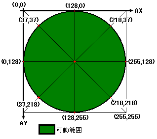
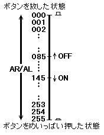
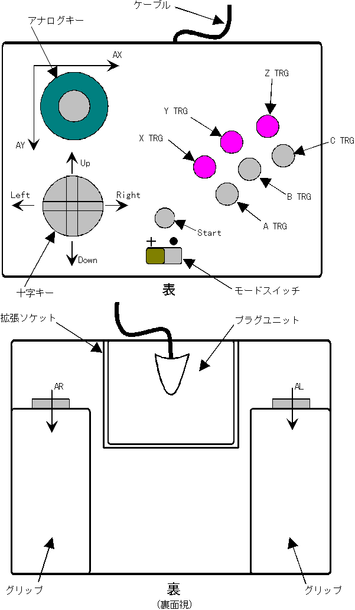

★INDEX
▲
|STN-40
|STN-41
|STN-42
|STN-43
|STN-44
|STN-45
|STN-46
▼
★INDEX
▲
|STN-40
|STN-41
|STN-42
|STN-43
|STN-44
|STN-45
|STN-46
▼
発行番号： | STN-43 | ||||||
|---|---|---|---|---|---|---|---|
発 行 日： | 96/05/16 | ||||||
メディア： | ●共 通 | ○CD-ROM | ○カートリッジ | ○その他 | |||
関 連： | ○プログラム | ●ハード | ○マニュアル | ○ツール | ○ゲーム | ○バグ | ○その他 |
情報区別： | ●新 規 | ○変 更 | ○追 加 | ||||
重 要 度： | ●厳 守 | ○推 奨 | ○参 考 | ○その他 | |||
添付資料： | ●無 | ○有 | |||||
件名補足： | |||||||
 |
本文は、拡張ユニットにノーマルユニットを装着した状態でのデータフォーマットを説明しています。 |
| bit７ | bit６ | bit５ | bit４ | bit３ | bit２ | bit１ | bit０ | |
|---|---|---|---|---|---|---|---|---|
| ペリフェラルID | ０ | ０ | ０ | ０ | ０ | ０ | １ | ０ |
| １ｓｔデータ | Right | Left | Down | Up | Start | ATRG | CTRG | BTRG |
| ２ｎｄデータ | RTRG | XTRG | YTRG | ZTRG | LTRG | １ | １ | １ |
| サターンペリフェラルタイプ・・・ | ０Ｈ(デジタルデバイス) |
|---|---|
| データサイズ・・・・・・・・・・ | ２Ｈ(２バイト) |
| Right,Left,Down,Up・・・・・・ | 十字キーでキーを入れた時「０」になります |
|---|---|
| Start,ATRG,CTRG,BTRG・・・・・ | XTRG,YTRG,ZTRGボタンを押した時に「０」になります |
| RTRG,LTRG・・・・・・・・・・・ | アナログのしきい値によりデジタルデータを返しボタンを押した時に「０」になります。 |
|
2nd DATAの下位3bit(bit2〜0)は［111b］となっておりますが他のペリフェラルとの互換性維持のため使用しないでください。 |
| bit７ | bit６ | bit５ | bit４ | bit３ | bit２ | bit１ | bit０ | |
|---|---|---|---|---|---|---|---|---|
| ペリフェラルID | ０ | ０ | ０ | １ | ０ | １ | １ | ０ |
| １ｓｔデータ | Right | Left | Down | Up | Start | ATRG | CTRG | BTRG |
| ２ｎｄデータ | RTRG | XTRG | YTRG | ZTRG | LTRG | １ | １ | １ |
| ３ｒｄデータ | AX7 | AX6 | AX5 | AX4 | AX3 | AX2 | AX1 | AX0 |
| ４ｔｈデータ | AY7 | AY6 | AY5 | AY4 | AY3 | AY2 | AY1 | AY0 |
| ５ｔｈデータ | AR7 | AR6 | AR5 | AR4 | AR3 | AR2 | AR1 | AR0 |
| ６ｔｈデータ | AL7 | AL6 | AL5 | AL4 | AL3 | AL2 | AL1 | AL0 |
| サターンペリフェラルタイプ・・・・ | １Ｈ(アナログデバイス) |
|---|---|
| データサイズ・・・・・・・・・・・ | ６Ｈ(６バイト) |
| Right,Left,Down,Up・・・・・・・ | 十字キーでキーを入れた時「０」になります |
|---|---|
| Start,ATRG,CTRG,BTRG・・・・・・ XTRG,YTRG,ZTRG | ボタンを押した時に「０」になります |
| RTRG,LTRG・・・・・・・・・・・・ | アナログのしきい値によりデジタルデータを返しボタンを押した時に「０」になります |
| AX7〜AX0,AY7〜AY0・・・・・・・・ | 符号を持たないA/Dコンバータ出力の絶対値を出力します。注意事項 |
|---|---|
| AL7〜AL0,AR7〜AR0・・・・・・・・ | 符号を持たないA/Dコンバータ出力の絶対値を出力します |
＜アナログパットの出力データ＞

＜Ｌ／Ｒボタンの出力データ＞

|
2nd DATAの下位3bit(bit2〜0)は［111b］となっておりますが他のペリフェラルとの互換性維持のため使用しないでください。 |

★INDEX
▲
|STN-40
|STN-41
|STN-42
|STN-43
|STN-44
|STN-45
|STN-46
▼